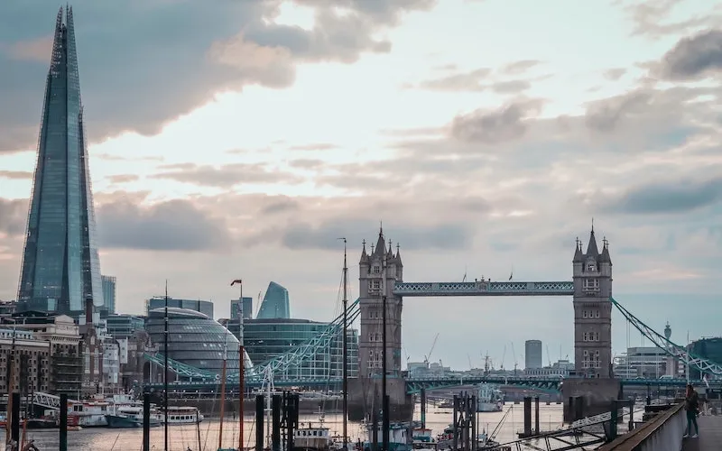

THE SHARD
L'HISTOIRE
Le concept du Shard est né de la vision de l'architecte italien Renzo Piano. Son objectif était de créer un bâtiment emblématique qui fusionnerait l'architecture contemporaine avec des techniques de construction innovantes. Le design unique en forme de pyramide de verre a été choisi pour sa modernité et son esthétique audacieuse.
La construction du Shard a commencé en 2009 et s'est achevée en 2012. Cependant, son édification n'a pas été sans défis. L'une des plus grandes difficultés était de concevoir une structure aussi haute et audacieuse tout en garantissant sa stabilité et sa sécurité. La hauteur impressionnante de près de 310 mètres, faisant du Shard le plus haut bâtiment du Royaume-Uni à l'époque, a nécessité des techniques de construction avancées.
Depuis son ouverture en 2013, le Shard est devenu un symbole iconique de Londres. Il abrite des bureaux, des restaurants, des hôtels et des espaces d'observation offrant une vue spectaculaire sur la ville. Sa silhouette distinctive est devenue un élément incontournable du panorama urbain de Londres, attirant des millions de visiteurs chaque année et symbolisant l'innovation architecturale moderne.
INFUENCE DE PIANO
La contribution de Renzo Piano à The Shard réside tout d'abord dans sa vision audacieuse et innovante. Piano a conçu un bâtiment emblématique qui transcende les normes architecturales, avec une silhouette en forme de pyramide de verre distinctive. Son approche visait à créer un édifice qui deviendrait un symbole contemporain de Londres, combinant esthétique moderne et fonctionnalité.
L'influence de Renzo Piano sur The Shard s'étend également à son engagement envers la durabilité et l'efficacité énergétique. Il a intégré des concepts environnementaux novateurs dans la conception, comme l'utilisation de verre réfléchissant pour maximiser la lumière naturelle et réduire la consommation énergétique, faisant du Shard l'un des bâtiments les plus écologiques de la ville.
Grâce à la vision de Renzo Piano, The Shard est devenu un symbole emblématique de Londres. Son design avant-gardiste et sa hauteur impressionnante ont radicalement transformé le paysage urbain de la ville. La structure a ajouté une dimension nouvelle et audacieuse à la skyline londonienne, devenant rapidement une destination incontournable et un point de repère architectural internationalement reconnu.
DÉCOUVRIR
Si l’article vous a plu, n’hésitez pas à lire celui sur le pavillon La Coste, une autre grande œuvre de Piano.